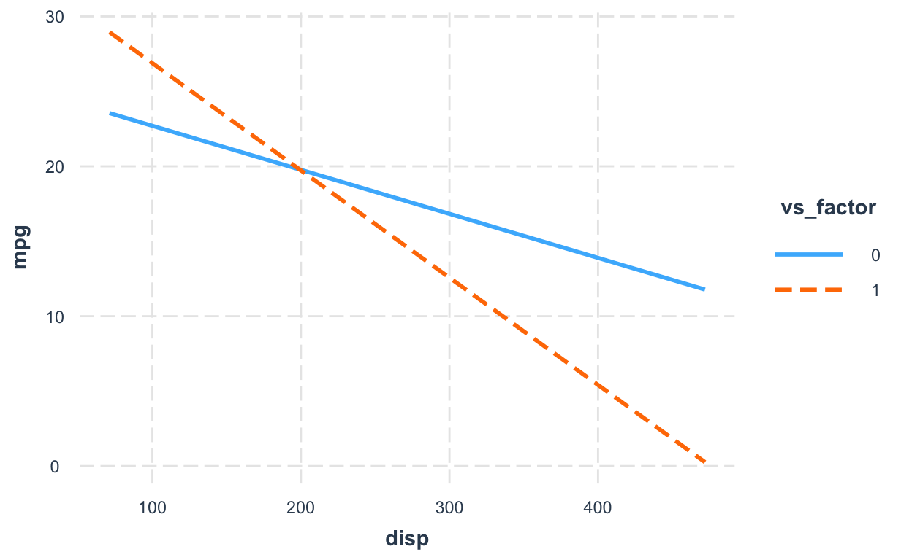
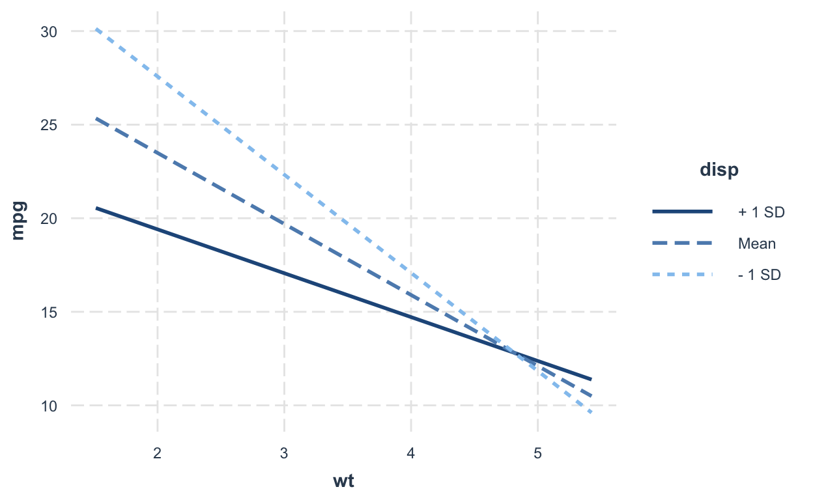

Table of Contents
Get source code for this RMarkdown script here.
This tutorial provides a step-by-step introduction to interpreting regression coefficients in linear models. I will use the built-in dataset mtcars.
General guidelines for interpreting regression coefficients
- intercept coefficient term (b0): the value of the outcome variable when all predictors = 0
- all other non-interaction coefficients: the change in the outcome variable when the predictor increases by 1
- interaction coefficients: the change in a coefficient value when one predictor increases by 1
library(data.table) # to manipulate dataframes
library(interactions) # to plot interactions later on
library(ggplot2)Have a look at the mtcars dataset.
dt1 <- as.data.table(mtcars) # convert to datatable
dt1
mpg cyl disp hp drat wt qsec vs am gear carb
1: 21.0 6 160.0 110 3.90 2.620 16.46 0 1 4 4
2: 21.0 6 160.0 110 3.90 2.875 17.02 0 1 4 4
3: 22.8 4 108.0 93 3.85 2.320 18.61 1 1 4 1
4: 21.4 6 258.0 110 3.08 3.215 19.44 1 0 3 1
5: 18.7 8 360.0 175 3.15 3.440 17.02 0 0 3 2
6: 18.1 6 225.0 105 2.76 3.460 20.22 1 0 3 1
7: 14.3 8 360.0 245 3.21 3.570 15.84 0 0 3 4
8: 24.4 4 146.7 62 3.69 3.190 20.00 1 0 4 2
9: 22.8 4 140.8 95 3.92 3.150 22.90 1 0 4 2
10: 19.2 6 167.6 123 3.92 3.440 18.30 1 0 4 4
11: 17.8 6 167.6 123 3.92 3.440 18.90 1 0 4 4
12: 16.4 8 275.8 180 3.07 4.070 17.40 0 0 3 3
13: 17.3 8 275.8 180 3.07 3.730 17.60 0 0 3 3
14: 15.2 8 275.8 180 3.07 3.780 18.00 0 0 3 3
15: 10.4 8 472.0 205 2.93 5.250 17.98 0 0 3 4
16: 10.4 8 460.0 215 3.00 5.424 17.82 0 0 3 4
17: 14.7 8 440.0 230 3.23 5.345 17.42 0 0 3 4
18: 32.4 4 78.7 66 4.08 2.200 19.47 1 1 4 1
19: 30.4 4 75.7 52 4.93 1.615 18.52 1 1 4 2
20: 33.9 4 71.1 65 4.22 1.835 19.90 1 1 4 1
21: 21.5 4 120.1 97 3.70 2.465 20.01 1 0 3 1
22: 15.5 8 318.0 150 2.76 3.520 16.87 0 0 3 2
23: 15.2 8 304.0 150 3.15 3.435 17.30 0 0 3 2
24: 13.3 8 350.0 245 3.73 3.840 15.41 0 0 3 4
25: 19.2 8 400.0 175 3.08 3.845 17.05 0 0 3 2
26: 27.3 4 79.0 66 4.08 1.935 18.90 1 1 4 1
27: 26.0 4 120.3 91 4.43 2.140 16.70 0 1 5 2
28: 30.4 4 95.1 113 3.77 1.513 16.90 1 1 5 2
29: 15.8 8 351.0 264 4.22 3.170 14.50 0 1 5 4
30: 19.7 6 145.0 175 3.62 2.770 15.50 0 1 5 6
31: 15.0 8 301.0 335 3.54 3.570 14.60 0 1 5 8
32: 21.4 4 121.0 109 4.11 2.780 18.60 1 1 4 2
mpg cyl disp hp drat wt qsec vs am gear carbLinear regression with one continuous predictor
head(dt1) # check data
mpg cyl disp hp drat wt qsec vs am gear carb
1: 21.0 6 160 110 3.90 2.620 16.46 0 1 4 4
2: 21.0 6 160 110 3.90 2.875 17.02 0 1 4 4
3: 22.8 4 108 93 3.85 2.320 18.61 1 1 4 1
4: 21.4 6 258 110 3.08 3.215 19.44 1 0 3 1
5: 18.7 8 360 175 3.15 3.440 17.02 0 0 3 2
6: 18.1 6 225 105 2.76 3.460 20.22 1 0 3 1
model_continuous_predictor <- lm(mpg ~ wt, dt1)
# summary(model_continuous_predictor)
coef(model_continuous_predictor)
(Intercept) wt
37.285126 -5.344472 - -5.34: whenever
wtincreases by 1 (unit),mpgchanges by this amount - 37.29: whenever
wtis 0,mpgis this value (i.e., intercept: the value ofmpgwhenwt = 0, of the value of the outcome variable when the predictor is 0)
Note that in the data, wt only takes on values between 1 and 5, so the intercept of 37.29 is an extrapolation of the regression line to wt values that don’t exist in our data (see figure below).
ggplot(dt1, aes(wt, mpg)) +
geom_vline(xintercept = 0) +
geom_point() +
geom_smooth(method = 'lm', formula = y ~ poly(x, 1), fullrange = TRUE) +
scale_x_continuous(limits = c(-1, 7), breaks = -1:7) +
annotate("text", x = 1.7, y = coef(model_continuous_predictor)[1] + 2,
label = paste0(round(coef(model_continuous_predictor)[1], 2), " (intercept)"),
size = 6)
Linear regression with one categorical predictor (two levels)
head(dt1) # check data (vs is a binary variable with just 0 and 1)
mpg cyl disp hp drat wt qsec vs am gear carb
1: 21.0 6 160 110 3.90 2.620 16.46 0 1 4 4
2: 21.0 6 160 110 3.90 2.875 17.02 0 1 4 4
3: 22.8 4 108 93 3.85 2.320 18.61 1 1 4 1
4: 21.4 6 258 110 3.08 3.215 19.44 1 0 3 1
5: 18.7 8 360 175 3.15 3.440 17.02 0 0 3 2
6: 18.1 6 225 105 2.76 3.460 20.22 1 0 3 1
dt1[, vs_factor := as.factor(vs)] # turn vs into a factor
model_categorical_predictor <- lm(mpg ~ vs_factor, dt1)
# summary(model_categorical_predictor)
coef(model_categorical_predictor)
(Intercept) vs_factor1
16.616667 7.940476 When the categorical predictor has only two levels (coded 0 and 1), we can use the numeric variable as the predictor. We’ll get the same results as above.
coef(lm(mpg ~ vs_factor, dt1)) # factor predictor
(Intercept) vs_factor1
16.616667 7.940476
coef(lm(mpg ~ vs, dt1)) # numeric predictor
(Intercept) vs
16.616667 7.940476 - 7.94: whenever
vs_factorincreases by 1 (unit),mpgchanges by this amount; here, whenvs = 0is one categorical level/condition, and vs = 1 is the second categorical level/condition; thus this value refers to the difference in mean values between the two conditions - 16.62: whenever
vs_factoris 0,mpgis this value (i.e., intercept: the value of y when x = 0); thus, the intercept is the mean of the values whenvs = 0.
To show you the interpretation of the coefficients is indeed correct, let’s manually compute the mean of the two conditions (vs = 0, vs = 1) and compute their difference.
# compute mean mpg for each vs condition
vs_condition_means <- dt1[, .(mpg_group_mean = mean(mpg)), keyby = vs]
vs_condition_means
vs mpg_group_mean
1: 0 16.61667
2: 1 24.55714The mean mpg value for the group vs = 0 is the same as the intercept value from the regression above (16.62).
# compute difference in mpg value between vs conditions
vs_condition_means$mpg_group_mean[2] - vs_condition_means$mpg_group_mean[1]
[1] 7.940476The difference in mean mpg values between the two vs conditions is the same as the slope (beta coefficient) from the regression above (7.94).
ggplot(dt1, aes(vs, mpg)) +
geom_point() +
geom_smooth(method = 'lm', formula = y ~ poly(x, 1), fullrange = TRUE)
Linear regression with one categorial predictor (three levels)
head(dt1) # check data (cyl is a categorical predictor with 3 levels)
mpg cyl disp hp drat wt qsec vs am gear carb vs_factor
1: 21.0 6 160 110 3.90 2.620 16.46 0 1 4 4 0
2: 21.0 6 160 110 3.90 2.875 17.02 0 1 4 4 0
3: 22.8 4 108 93 3.85 2.320 18.61 1 1 4 1 1
4: 21.4 6 258 110 3.08 3.215 19.44 1 0 3 1 1
5: 18.7 8 360 175 3.15 3.440 17.02 0 0 3 2 0
6: 18.1 6 225 105 2.76 3.460 20.22 1 0 3 1 1
dt1[, cyl_factor := as.factor(cyl)] # turn cyl into a factor
model_categorical_predictor_3 <- lm(mpg ~ cyl_factor, dt1)
# summary(model_categorical_predictor_3)
coef(model_categorical_predictor_3)
(Intercept) cyl_factor6 cyl_factor8
26.663636 -6.920779 -11.563636 When the categorical predictor has three or more levels, we can’t use the numeric variable as the predictor because the coefficients will be different.
coef(lm(mpg ~ cyl, dt1)) # numeric predictor
(Intercept) cyl
37.88458 -2.87579
coef(lm(mpg ~ cyl_factor, dt1)) # factor predictor
(Intercept) cyl_factor6 cyl_factor8
26.663636 -6.920779 -11.563636 Interpreting the coefficients in the model with the categorical predictor
When we convert variables to factors or characters,
Rautomatically represents the “smallest” condition (1 is smaller than 9; “a” is smaller than “b”) as the intercept. In other words, this condition is treated assigned the value 0 and all other conditions are assigned 1. That is,Rby default uses “dummy coding”.26.66: when
cyl_factoris 4 (or the “smallest”cyl_factorvalue in the dataset),mpgis this value (i.e., intercept); thus, the intercept is the mean of the values whencyl_factor = 4.-6.92: difference in mean
mpgvalues between the conditionscyl_factor = 4andcyl_factor = 6-11.56: difference in mean
mpgvalues between the conditionscyl_factor = 4andcyl_factor = 8
To show you the interpretation of the coefficients is indeed correct, let’s manually compute the mean of the three conditions (cyl_factor is 4, 6, 8) and compute their differences.
# compute mean mpg for each vs condition
cyl_condition_means <- dt1[, .(mpg_group_mean = mean(mpg)), keyby = cyl_factor]
cyl_condition_means
cyl_factor mpg_group_mean
1: 4 26.66364
2: 6 19.74286
3: 8 15.10000The mean mpg value for the group cyl_factor = 4 is the same as the intercept value from the regression above.
# compute difference in mpg value between cyl = 6 and cyl = 4
cyl_condition_means$mpg_group_mean[2] - cyl_condition_means$mpg_group_mean[1]
[1] -6.920779
coef(model_categorical_predictor_3)[2] # beta coefficient
cyl_factor6
-6.920779
# compute difference in mpg value between cyl = 8 and cyl = 4
cyl_condition_means$mpg_group_mean[3] - cyl_condition_means$mpg_group_mean[1]
[1] -11.56364
coef(model_categorical_predictor_3)[3] # beta coefficient
cyl_factor8
-11.56364
ggplot(dt1, aes(cyl, mpg)) +
geom_point() +
geom_smooth(method = 'lm', formula = y ~ poly(x, 1), fullrange = TRUE)
When fitting the regression model, R uses dummy coding by default. Hence, the condition cyl = 4 is actually assigned 0 (and thus is the intercept).
Linear regression with continuous predictor, categorical predictor (two levels), and their interaction
Let’s fit a regression model that includes an interaction term.
model_interaction1 <- lm(mpg ~ disp * vs_factor, data = dt1)
coef(model_interaction1)
(Intercept) disp vs_factor1 disp:vs_factor1
25.63755459 -0.02936965 8.39770888 -0.04218648 How do we interpret the interaction coefficient?
For every 1 unit increase in vs_factor (coded 0 and 1), the coefficient of disp changes by -0.042. READ THAT SENTENCE AGAIN TO SLOWLY DIGEST IT! It’s the change in the COEFFICIENT of disp when vs_factor increases by 1 (unit).
Let’s fit separate models for the two vs_factor conditions to verify the statement/interpretation above.
Fit linear models (mpg ~ disp) separately for vs_factor = 0 and vs_factor = 1.
model_mpg_disp_vs0 <- lm(mpg ~ disp, data = dt1[vs_factor == 0]) # blue line in figure below
model_mpg_disp_vs1 <- lm(mpg ~ disp, data = dt1[vs_factor == 1]) # orange line in figure belowsCheck the coefficeints of disp for these two models
coef(model_mpg_disp_vs0)
(Intercept) disp
25.63755459 -0.02936965
coef(model_mpg_disp_vs1)
(Intercept) disp
34.03526346 -0.07155613 Here’s a reminder (again) of how to interpret the disp * vs_factor interaction coefficient in the interaction model (mpg ~ disp * vs_factor): For every 1 unit increase in vs_factor (coded 0 and 1), the coefficient of disp changes by -0.042. Or the change in the COEFFICIENT of disp when vs_factor increases by 1 (unit).
Let’s compute the difference of the disp coefficients in the two models above (where vs is 0 and 1).
coef(model_mpg_disp_vs1)['disp'] - coef(model_mpg_disp_vs0)['disp']
disp
-0.04218648 The difference in the disp coefficients (-0.042) in the two models (where vs_factor is 1 or 0) is identical to the interaction coefficient (disp * factor: -0.042) in the model_interaction1 model.
In other words, the interaction coefficient is the difference between the values of the two slopes (i.e., coefficients) (see figure below).
mpg ~ dispwhenvs_factor = 0:dispcoefficient is -0.029mpg ~ dispwhenvs_factor = 1:dispcoefficient is -0.072- The slope (i.e., coefficient) of
dispin thempg ~ dispmodel is more negative (bydisp * factor: -0.042) whenvs_factor = 1than whenvs_factor = 0.
interact_plot(model_interaction1, pred = disp, modx = vs_factor)
Linear regression with two continuous predictors and their interaction
You can interpret the interaction coefficients in all models (continuous or categorical variables) the same way.
model_interaction2 <- lm(mpg ~ disp * wt, data = dt1) # all continuous predictors
coef(model_interaction2)
(Intercept) disp wt disp:wt
44.08199770 -0.05635816 -6.49567966 0.01170542 disp:wt= 0.012: the change in the coefficient ofdispwhenwtincreases by 1 unit (or the reverse is also fine: the change in the coefficient ofwtwhendispincreases by 1 unit)
When all predictors are continuous variables, the convention is to plot the effect of one regressor at different levels (+/- 1 SD and mean value) of the other regressor.
interact_plot(model_interaction2, pred = wt, modx = disp)
interact_plot(model_interaction2, pred = disp, modx = wt)
Linear regression with three- or four-way interactions
No matter how complicated your interaction terms are (3 or 4 or 10-way interactions), you interpret the coefficients the same way!
model_interaction4 <- lm(mpg ~ disp * wt * qsec * drat, data = dt1) # all continuous predictors
coef(model_interaction4)["disp:wt:qsec:drat"] # the 4-way interaction
disp:wt:qsec:drat
0.0301177 There are many ways to interpret the coefficient disp:wt:qsec:drat = 0.03:
- when
dispincreases by 1, thewt:qsec:dratcoefficient (slope) changes by 0.03 - when
wtincreases by 1, thedisp:qsec:dratcoefficient (slope) changes by 0.03 - when
qsecincreases by 1, thedisp:wt:dratcoefficient (slope) changes by 0.03 - when
dratincreases by 1, thedisp:wt:qseccoefficient (slope) changes by 0.03
You can also interpret the three- or two-way interactions in the same model in the same way. You get it…